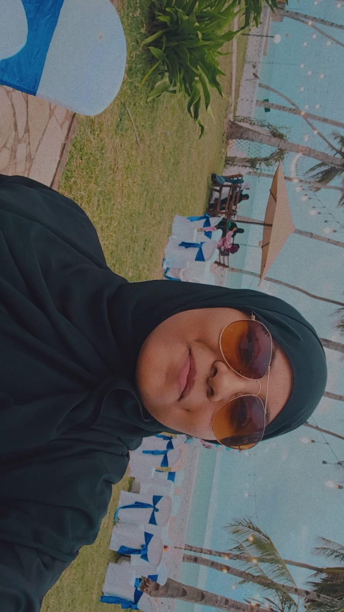

I am a 19 year old from Mombasa, Kenya, passionate about Aerospace Engineering and using technology to solve real problems.
I built HerRiseNow, a Django platform that supports women affected by gender based violence. I also wrote "The Blue Frontier", a research paper on marine biodiversity and coastal climate resilience.
I mentor girls at Nurturing Stars Organisation and was recognized as a Rising Star at Swahilipot Hub. I believe in building solutions that matter for my community and Africa.